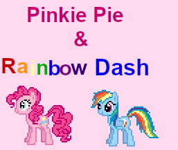

Pinkie Pie and Rainbow Dash

This is my wonderful ghost that I put lots of time and effort into! It features the characters Pinkie Pie and Rainbow Dash from my favorite show of all time, My Little Pony: Friendship is Magic.
Pinkie and Dashie chat on your screen and you can pet them on their head and boop 'em on their face (by moving the mouse over those areas, not clicking, although you can use the mouse wheel also), or even kiss (double click) them on those two places :P There's no way to hit them, thank goodness!
If you double click anywhere else on Pinkie, a menu appears which you can use to hear what's on the duo's mind currently, hear the last thing they said, play a game of rock-paper-scissors (based off the same function in the cool Sam & Max ghost by pixieplus), have them ask you a question, or ask about their lives. If you double click on Rainbow, you'll get some cool stuff ;) but other than that, you can report a bug, or update from her menu.
This is a simple ghost (desktop buddy), so there's no plot or relationship stuff, unlike my other ghost, The Narrator. They do have loads of fun dialogue though! Click here to download a matching calendar skin! Also check out ButtonToy and Reassurance Bucket!
What's an Ukagaka/ghost?
An Ukagaka, or ghost, is a character that hangs out on your desktop! They can do little tasks for you such as emptying your recycling bin, checking for new emails, or checking the weather. Mostly they'll just keep you company and say random dialogue.
Ghosts are very diverse, some have a strong focus on story and discovering information, while others are full of interesting functions or games. Check out this video to learn more! There's a cool cameo at the end :D
How to install a ghost
To use a ghost, you'll need a program to run it in. If you're on Windows, you can use SSP. If you're not on a Windows computer there are some options available, but you'll have to play around and see what works for you.
Mac: Ukagaka on Macs, NiseRingo, PlayonMac+SSP, WineBottler
Linux: NINIX-AYA
For me (OdieDogXP), SSP works almost perfectly on my Arch Linux installation with Wine, with the only caveats being that installing ghosts basically doesn't work unless the file doesn't look like this on the inside, or is a simple zip file, and that Always Show Foreground uses up more CPU power than on Windows when turned on.
For those using SSP, go ahead and download the complete install package from the website. When you run it a catgirl named Emily should appear and say something in japanese. Drag and drop the .nar file you downloaded for this ghost on her, and she should install them for you. Once she's done, right click her, hover over 'change ghost', and select the appropriate ghost!
If you get an error window like this when you start SSP, it probably can't find any ghosts to run. You can try dropping the .nar file for the ghost you want to install onto that window. If that doesn't work, click the first button and point it towards your ghost directory (it should be \SSP\ghost).
If the right click menu is in Japanese, the language option is the 4th one up from the bottom. Select English and it should change immediately. If it doesn't, try restarting SSP.
If the catgirl will not install any ghosts for you, you can unzip the .nar file and drag the contents into the \SSP\ghost folder. Your unzipped folder should have subfolders called 'ghost' and 'shell' on the top level, if it doesn't you'll have to move all the ghost's files up one level. Once that's done, restart SSP and look in the right click menu again, and they should be in your list of ghosts.
Instructions on how to use each ghost are in their readmes, which should automatically pop up when you install them! If it doesn't appear, you can see it by opening them, right clicking on them, and going to Information>Read me.
The right click menu is how you do things like change ghosts or call more of them at once, how you change the size of the ghost/balloon, and how you access the preferences menu to do things like make the ghost always stay on top of other windows. If you're wanting to tweak something about SSP, you'll likely find it there!
👻 Member of the Ukagaka/Ghost Development and Download webring 👻
👻 | Previous |
Random |
Next | 👻
Please note that Google Chrome-based browsers treat all webring buttons as a random button.